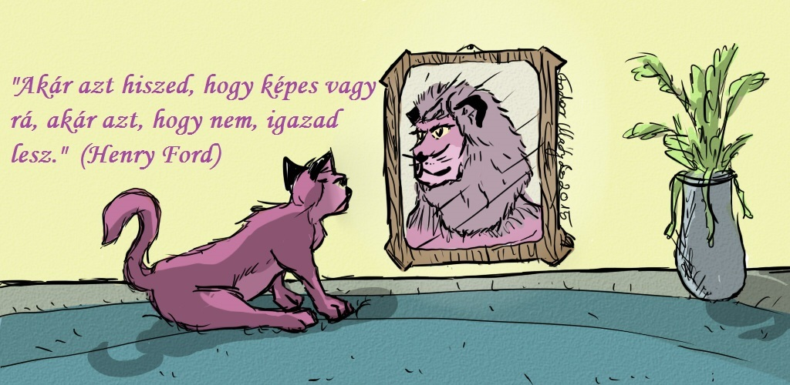
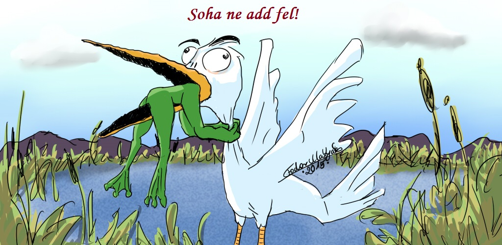

Üdvözlöm!
Fodorné Vincze Anna vagyok, klinikai szakpszichológus.
Magánrendelésemen személyesen vagy messengeren/ skype-on tudunk konzultálni.
A következő módon tudok segíteni:
- - pszichológiai ismeretátadás, előadás, tanácsadás, szakmai jellegű írások
- - nevelési tanácsadás, gyermekekkel kapcsolatos pszichológiai segítségnyújtás, a szülőkkel együtt keresve a problémák okát és a megoldást
- - kellemetlen, vagy krónikus testi panaszok, tünetek enyhítése, megszüntetése azok jelentésének, üzenetének feltárásával
- - a Simonton-módszer elsajátítása egyéni vagy csoportos formában, krónikus betegeknek és egészségeseknek egyaránt
- - kapcsolódás belső erőforrásainkhoz: a lényünk legmélyén rejlő belső béke, öröm, nyugalom forrásának megtalálása, a beteg sejtjeinkben, szerveinkben tárolt (megbetegítő hatású) érzések, emlékek feldolgozása, elengedése - ezáltal az öngyógyító folyamat beindítása. Kapcsolatfelvétel bölcs személyiség-részünkkel, „Belső Vezetőnkkel”, ily módon megtalálni a választ a számunkra fontos kérdésekre
- - léleksimogató tréningek vezetése a fenti témákban
Előzetes egyeztetés alapján!
Elérhetőségeim:
20/216-9459
anna710517@gmail.com

Egy új, ígéretes módszerről
Simonton-csoport indul daganatos betegeknek
Ez a cikk daganatos betegeknek és hozzátartozóiknak szól. A rák diagnózisa, annak ellenére, hogy ha időben fedezik fel, jó eséllyel gyógyítható, ma a köztudatban mégis nagyon negatív tartalmakat hordoz: szenvedés, fájdalom, halál asszociációja tapad hozzá. Kevesen tudják ilyen gondolatok között megőrizni a pozitív elvárásaikat, a reményt, hogy mégis sikerülhet a gyógyulás. Azt pedig még kevesebben tudják, hogy létezik olyan módszer, ami könnyen megtanulható, és amivel a beteg saját, belső öngyógyító erőit tudja mozgósítani a gyógyulás érdekében.
Amerikában már a ’70-es évek óta használják ezt a módszert, igen jó eredményekkel. Carl és Stephanie Simonton klinikájára gyógyíthatatlan rákbetegeket küldenek az orvosok, kb egy év túlélési esélyt adva nekik. A Simonton módszer hatására a gyógyíthatatlannak mondott betegek egynegyede meggyógyul, egynegyedének állapota nem romlik tovább, és lényegesen jobb életminőséggel tud élni kétszer olyan hosszú ideig.
Maga a módszer számos, könnyen megtanulható és jól használható gyakorlatból épül fel, pl a „gyógyító imagináció” során olyan képeket tervezünk meg és gyakorolunk be, amelyek felidézése erősíti, támogatja az immunrendszer működését a rák elleni csatában. De nagyon jó hatásúak a relaxációs gyakorlatok is, növelik a testünk jelzéseire való odafigyelő-képességünket. Vannak speciális gyakorlatok a különféle élethelyzeti nehézségek, belső feszültségek, régi sérelmek keltette neheztelések (ez mind komoly megbetegítő tényezőt jelent!) feldolgozására is.
A gyógyulás számos tényezőtől függ. Ezek közül a legfontosabb a beteg aktivitása. Valódi sikert akkor érhet el bárki, ha hajlandó tenni is valamit Önmagáért, és a gyógyulásáért a saját oldaláról vállalja a felelősséget.
A Simonton-módszer kiegészíti a hagyományos orvosi kezelést, felerősítve annak pozitív hatását.
Szeretettel várok mindenkit, aki szívesen megismerné és elsajátítaná a módszert, aki szeretné mozgósítani saját, belső öngyógyító erőit a rák leküzdésére, életminősége javítására, a kezelések mellékhatásainak csökkentésére. Olyan betegeket várok, akik vállalják az aktivitást, a rendszeres gyakorlást. Cserébe egy jó hangulatú csoportot kínálunk, ahol elsősorban az egészségről, az egészség visszaállításának lehetőségéről lesz szó.
Jelentkezni lehet: Fodorné Vincze Anna klinikai szakpszichológusnál. Tel: 20/216-9459. Email: anna710517@gmail.com
Lelkünk békéje- testünk egészsége
A Simonton-módszer
A rák komoly betegség, a szervezet vészjelzése. Csak úgy lehet elbánni az életet fenyegető veszéllyel, ha bízunk a lehetőségeinkben. A pozitív elvárás nem garantálja, de növeli a gyógyulás valószínűségét. A negatív hiedelmek megváltoztatásának első lépése, hogy tudatosítjuk: a reménytelenség akadályozza a test természetes védelmi rendszerét. Ugyanazzal az erővel, amellyel negatív elvárásainkat alakítjuk ki, létrehozhatunk pozitívakat is.
A rák diagnózisa nagyon erős félelmet vált ki, amely érinti magát a beteget, de a családot, a támogató környezetet is. Pedig a modern onkológiai terápiák és a hatékony kiegészítő gyógymódok segítségével a rák ma már leküzdhető!
A legelső érzés a sokk, döbbenet, kétségbeesés, bénultság: sokan úgy érzik, ez szinte nem is velük történik, mintha egy üvegbúra választaná el őket a környezetüktől, a történésektől. A legkínzóbb talán a tanácstalanság, tehetetlenség érzése. Nagyon fontos, hogy ebben a fázisban a rászoruló segítséget kapjon a családtól, és ha kell, szakembertől.
A tapasztalatok azt támasztják alá, hogy a hagyományos orvosi kezelés mellett teljes életmódváltásra lehet szükség. Az egészséges táplálkozás gyógyító ereje, a mozgás mellett lényeges a lelki feszültségek kezelése, a saját, belső gyógyítóerő felfedezése. Az életmódváltás a szemléletmód megváltoztatását igényli.
A betegség kialakulása mögött a pszichológiai kutatások sok esetben tárták föl, hogy az illető valamilyen, számára nyomasztó, megoldhatatlannal látszó érzelmi konfliktust élt át, sokszor hónapokon, éveken keresztül. Ezt „életcsapdának” is nevezzük. Szenvedett abban a szituációban, amiben volt, de úgy érezte, változtatni nem tud rajta. A segítség ebben az esetben azt jelenti, hogy az erőforrásainkat, lehetőségeinket újragondoljuk, akár pszichológusi irányítással. Megtaláljuk, meglátjuk azokat a pontokat, ahol nem feltétlenül maga a szituáció, inkább a látásmódunk, hozzáállásunk megváltoztatásával a helyzet élhetővé, barátságossá alakítható. A hozzáállás változtatása a daganatos betegek életében a tapasztalatok szerint az asszertivitás, önérvényesítés kialakítását, fokozását jelenti. A hatékony önérvényesítés tanulható, begyakorolható!
Ugyancsak tanulható, könnyen elsajátítható a relaxáció, az az egyszerű gyakorlat, ami a test és lélek harmonizálásán keresztül hat. A kezelés alatt segíti a mellékhatások csökkentését, a betegséggel összefüggő, vagy egyéb szorongás szintjét, javítja az alvást, csillapítja a fájdalmat, hozzásegít kapcsolatot teremteni a belső gyógyító erővel, és aktiválja azt.
A szervezetünkben rejlő saját gyógyító forrás megtalálásának, aktiválásának, működtetésének hatékony és egyszerű, és ugyancsak könnyen begyakorolható módja az imagináció. Az imagináció nem más, mint fantáziánk szándékos, irányított használata, egyfajta meditáció, amivel egészségünket, illetve szerveink egészséges működését a képzelőerőnkkel helyreállítjuk.
A fantáziánk használata gyermekkorunktól jellemez minket- az élet minden területén. Bármilyen újítás, felfedezés először képzeletünkben születik meg! A gondolatokra, képekre a test nagy erővel reagál! Ez az állítás könnyen igazolható azzal, elég egy citrom képére gondolnunk ahhoz, hogy pusztán a fantáziánk megindítsa a nyálelválasztást. Ugyanígy reagál szervezetünk arra a képre, amivel védelmi rendszerünk működését jelenítjük meg, képi úton fokozzuk az immunrendszer tisztító, helyreállító munkájának a hatékonyságát.
A 70-es években a sugárterápiás onkológus szakorvos, Carl, és felesége, a pszichológus végzettségű Stephanie SIMONTON egy alternatív klinikát indított el Texasban. Azok a rákos betegek kerültek ide felvételre, akik az orvostudomány akkori állása szerint menthetetlenek voltak. A klinika működésének döbbenetes tapasztalata alapján a túlélési idő megkétszereződött.
A Simonton házaspár egyik felismerése az volt, hogy
szervezetünk, testi működésünk egésze hihetetlen erővel reagál gondolatainkra!
Az ősi gyógyító technikák ismerték és használták ezt a jelenséget- de egyre nagyobb teret nyer a modern pszichológiában is.A Simonton házaspár nevéhez fűződő „gyógyító imagináció” gyakorlat olyan képek szándékolt, megtervezett felidézését jelenti relaxációban, amelyek ugyanúgy alkalmasak az immunrendszer működését segíteni, fokozni, ahogy a citrom képe a nyálmirigyekét. A működésében megerősített, megtámogatott védekező rendszer erősebb, sikeresebb abban a csatában, amit a rákos sejtek elpusztítása, szervezetből való kitakarítása jelent.
A gyógyulási folyamat megjelenítése során az immunrendszer és a segítő erők a daganatos sejteket elpusztítják. Az immunrendszer és a daganat találkozása a selejtes sejtekre végzetes. (Ahogy a vízkőoldó, ha a vízkővel találkozik, természetes, hogy minden különösebb erőfeszítés nélkül, egyszerűen feloldja azt.)
A „gyógyító kép” – a betegség megszüntetésének, az egészség helyreállításának útját megjelenítő fantázia, „belső mozi”- megszerkesztésének legfontosabb lépései a következők:
- A „mozi” során megjelenítem, ahogy a gyógyító erők és segítők:
- - Maradéktalanul elpusztítják a ráksejteket
- - A ráksejteket a szervezetből eltávolítják
- - A szervezet egészséges működése maradéktalanul helyreáll
- - Látom magam a boldog jövőben, egészségesen, ahogy a céljaim megvalósulnak
- - Látom magam a jövőben a gyógyító gyakorlatot végezni.
A megjelenített képet a megadott szempontok szerint mi magunk alkotjuk, ahelyett, hogy megvárnánk, hogy mi jön magától!
A módszer Magyarországon tanfolyami formában elsajátítható, és otthon rendszeresen végezhető. Ajánlott mindenfajta daganatos betegséggel küzdő számára.
- Ajánlott könyvek jegyzéke
- - Carl Simonton: Gyógyító képzelet
- - Stephanie Simonton: Gyógyító család
- - Balogh Béla: Többszintű gyógyulás- rák, a megoldható feladat
- - Beata Bishop: Ideje a gyógyításnak
- - David Servan- Schreiber: A rák ellen
- - Brandon Bay: Belső utazás
A nevek nem valódiak, de a történetek igazak. Több csoportunk történéseiből raktam össze ezt az elbeszélést. Remélem, felkelti az Olvasó érdeklődését, és meggyőzi arról, hogy a rák kezelése elképzelhetetlen a pszichés tényezők figyelembevétele nélkül. Belső öngyógyító erőink sikeresen mozgósíthatók betegségeink nagy részénél, valamint hatalmas gyógyulást segítő potenciál rejlik a sorstársi közösségekben. Megtapasztaltam és hiszem.
„Úgy érzed magad, ahogy gondolkodsz!”
Pillanatképek egy Simonton-csoport életéből
1. alkalom: a találkozás
Simonton-csoportunk első ülése előtt nagyon izgatott voltam! Körben ültek, a szemükben nagy várakozás csillogott. Szilvi és Kinga régi barátnők, vidáman trécselnek. Ádám és Éva házaspár, mindketten rákosok, csöndben beszélgetnek. Klári nagyon vékonyka, ő a legfiatalabb, velem egyidős lehet. Marcsi pirospozsgás, teltkarcsú, ő a leghangosabb. Nem ismer senkit, de már meséli is a történetét: az agyalapi mirigynél volt daganata, amit megműtöttek, de visszanőtt. Zsuzsa elegáns, halkszavú, szemüveges hölgy, okos tanácsokat ad neki a pozitív gondolkodásról. Majd ezt is át fogjuk beszélni, hogy nem biztos, hogy jó dolog kéretlenül adni a tanácsokat…Editke csupa mosoly, ahogy nézelődik, majd bekapcsolódik Marcsiék beszélgetésébe. Ágin látszik a betegsége, a többszörös áttétek, nagyon sovány, haja tüsi, arca komoly, a tekintete kemény. Csinosan felöltözött, divatos színekbe, fülében hatalmas fülbevalók. Mellette ül Zita, aki rosszul van a kemoterápiától, amit kap. Arca szürke, ő is vékony, viszont a parókája nagyon jó, többen is dicsérik, azt hiszik, a fodrásztól jött. Erika mosolygós, harmóniát sugárzó idősebb hölgy, nem látszik rajta állapota súlya, az áttét sem derülne ki, ha nem beszélne róla. Erzsike ül mellette, szőke, nagyon nőies, kisminkelt, csinos nő.
Belevágunk. Meggyújtom az illatos mécsesemet, megkínálom őket teával, és halkan beszélni kezdek. Elmondom, ki vagyok, és mesélek erről a módszerről. Hogyan találtam rá, és mennyit kellett harcolnom érte, hogy megtanulhassam…Mennyire örülök neki, hogy ilyen sokan vannak, na nem annak örülök, hogy ennyien betegek, hanem hogy ennyien akarnak tenni aktívan a gyógyulásukért! Elmondom a módszer lényegét, kihangsúlyozva, hogy nem én fogom őket meggyógyítani, hanem, ha vállalják az aktivitást és a rendszerességet, ők gyógyíthatják meg saját magukat. A módszer segítségével mozgósítani tudják saját belső öngyógyító erőiket, ez a Simonton-módszer egyik alappillére, a másik a szemléletmód, a gondolkodás megváltoztatása. Nagyon figyelnek, Klári és Zsuzsa jegyzetelnek.
Rövid bemutatkozást kérek mindenkitől, semmi nem kötelező, csak azt mondják el magukról, amit fontosnak tartanak. Döbbenetes, hogy mindenki a betegségéről mesél, van, aki a nevét is elfelejti megmondani, mintha ő mostmár csak A Rákos Beteg lenne…Szilvi és Kinga lelkes vezetői egy másik városban működő civil szervezetnek, ennek megfelelően kezdik a kört, nagyon kihangsúlyozva a pozitív gondolkodás és a közösség jó hatását. Előhozzák jó programjaikat is, kérem, hogy erre majd a végén térjünk vissza. Szilvi rákos, de már túlvan műtéten, kemón, most már tünetmentes, az is szeretne maradni. Barátnője, Kinga ugyanebben a cipőben jár, a civilszervezetnél találtak egymásra. Marcsi ragadja magához a szót, újra elmeséli a történetét, elnézést kérve, hogy újabban folyton sírva fakad, a legapróbb dolgok miatt is. Editke rögtön megértően reagál, Zsuzsa is. Zita komoran elmeséli a történetét, hogyan vesztette el állását, majd kiderült, hogy a férje megcsalja. Nem is igazán akart már élni, amikor kiderült, hogy rákos. A műtétbe beleegyezett, de a további kezelésekbe nem, döntse el a Jóisten, megmarad-e vagy sem. A csoport felhördül, Editke, Marcsi, Szilvi, Kinga szinte egyszerre reagálnak: „De hát ez passzív öngyilkosság!”, „Így nem szabad hozzáállni!”, „Kell pozitív célt találnod!”, felkiáltásokkal. Kimenekítem Zitát a kereszttűzből, mondván, van olyan, hogy az ember nem lát célt többé. Klári egyetért, Erzsike is bólogat. Zita megkönnyebbül, hogy nem baj, ha most nem tud pozitívan gondolkodni. Így már el tudja mesélni, hogy az áttét óta, (ami még nem biztos, hogy valódi áttét) vállalja a kemoterápiát, és kutya rosszul van. Valamint keresi a hozzá hasonló helyzetben levő emberek társaságát ott a falujában. És hogy nagyon szeretne megtanulni hastáncolni… A csoport feszültségszintje csökken, „Ez nagyon jó ötlet!”- lelkesedik Zsuzsa, Szilvi és Kinga azonnal csoportot, neveket ajánl. Szilvit és Kingát leállítva, továbblépünk. A nagyon divatos Ági tömören összefoglalja rákos betegségeit, majd az életét, a veszteségeit. Meghaltak a szülei, majd a férje is. Gyerekei távol élnek. „Egyedül maradtam!”- sommázza. Zsuzsa veszi át a szót: „Én, Hálistennek, nagyon régen elváltam a férjemtől. Nagyon rossz természetű volt.” Kiderül, hogy nyugdíjas lett, majd a gyermekei is elköltöztek, távolra, élik a saját életüket. Szemérmesen elmondja melldaganata történetét. „Milyen jó, hogy nincs férjem, ő nem bírta volna elviselni a mellem hiányát!”Majd ő is, mint egy mankóba kapaszkodva, előhozza a pozitív gondolkodásba és a meditációba vetett hitét, majd csodálatos lányát, akitől nagyon sokat tanult. Klári keserűen mesél, elmeséli rákját, majd közli, hogy családja és barátai hatására jött el ide, ők akarják, hogy meggyógyuljon, és reméli, hogy egyszer ő is fogja ezt akarni. Elmondja még, hogy régebben depresszióval kezelték.
Erika csöndesen mesél a betegségéről, az áttétről, arról, hogy amennyire lehet, szeretné kitolni a stagnálás idejét…a csoport döbbenten hallgat, nem gondoltuk volna, hogy ilyen súlyos az állapota. Ági meg is kérdi, honnan az ereje…Kiderül, hogy Erika mélyen hívő ember, élő hite komoly segítség a betegség elleni harcban, másik segítsége a feladata: súlyos beteg édesanyját ápolja, gondozza. „Nem mehetek el, még dolgom van.”- hangsúlyozza. Rengeteg barátja, és a jópár közösség, aminek motorja, lelke ő, szintén komoly segítőerőt jelent számára.
Lassan lépünk tovább. A csöndes Ádám meséli el kálváriáját a rákkal, és a műtéteket, nagyon hangsúlyozva azt, hogy mostmár nagyon figyel magára, egészségesen él, félévente szűrővizsgálatokra jár. „Túlvagyok mindenen”- közli elégedetten, tünetmentes, hangsúlyozza, hogy pozitívan kell gondolkodni, és milyen nagy segítsége a katolikus hite. „Mostmár csak az asszony is meggyógyuljon!” Ez nála a végszó. Éva még nála is csöndesebb, idegesen nevetgél, és halkan beszélni kezd. Kiderül, hogy nagy bánatára nem született gyermekük. A nyugdíjazása, és a férjénél diagnosztizált rák teljesen kikészítették, „idegileg belerokkantam”- mondja, láthatóan bűntudattal,”pont akkor nem tudtam mellette állni, ápolni, amikor szüksége lett volna rá”. Erre a párja azonnal a védelmébe veszi, szeretettel átölelve.br>
Erzsike rezignáltan válaszolgat, keveset mesél a betegségéről, annál többet rossz házasságáról, aminek nemrég mondták ki a végét. Gyermekei felnőttek, élik az életüket, ő pedig beteg lett. Azóta minden segítséget megragad, jógázik, meditál, sportol.
A mosolygós Editke maradt a kör végére, akit szelíden nógatni kell a beszédre. Ő is nyugdíjas, a helyi rákelleni szervezetben dolgozik önkéntesként, őt bármikor ugrasztani lehet, tud menni és segít, erre több példát is sorol. Elmondja, hogy ő a kakukktojás a csoportban, mert nem daganatos beteg, hanem sokízületi gyulladása van, ami nagyon sok fájdalommal jár. De ez alig kap hangsúlyt a történetében, sokkal fontosabb az, hogy most teljesült egy régi álma, és bejárhat a kórházba önkéntesként, a krónikus bel betegeihez. Mesél az idős, kiszolgáltatott betegekről, szeme csupa könny. A csoport megilletődve hallgat. Editke történetében az is figyelemreméltó, hogy többször is elveszti a fonalat, elfelejti, mit is akart mondani. S ő ezt nagyon kínosan éli meg, noha a csoport támogatja, hasonlót sokan átélnek. Végül pár szóval én is bemutatkozom.
Jó könyveket teszek ki az asztalra: Beata Bishop, a Simonton házaspár, Balogh Béla Buda László, David R. Hamilton, Nemes Ödön, David Servan-Schreiber, Albert Espinosa könyveit.
Időszerűnek tartom átbeszélni ezt a pozitív gondolkodás-témát. Kérem, határozzák meg, mi szerintük a pozitív gondolkodás. Csend, töprengenek, majd Zsuzsa szedi össze: „Hogy a jó dolgokra gondolunk…nem szabad foglalkozni a rosszal…” „Minden rosszban van valami jó..” „Minden helyzetben megkeresni a jót..”- gyűlnek az ötletek a csoportban. „De hát kinek mi a jó?”- szegezem nekik a kérdést. „Ez nagyon szubjektív dolog! Meg aztán vannak dolgok, amiben semmi jó nincsen. Mi a jó abban, ha meghal, akit szerettél, vagy kiderül, hogy rákos vagy? Az borzasztó dolog.”Zita elmondja, tudja, hogy a pozitív dolgokra kéne gondolnia, de képtelen rá. Folyton azon aggódik, mi van, ha mégis áttét, ami a csontjában van? Olyan rossz, hogy senkivel nem tud erről beszélni, legutóbb is elkezdte volna mondani a fiának, hogyha ő meghal, mit szeretne, de a fia meg se hallgatta, letorkollta, „Anya, ne is beszélj ilyeneket, te meg fogsz gyógyulni!” Többen helyeselnek, igen, ezt a hozzáállást ők is megtapasztalták. „Erről beszélek. –mutatok rá- „Hogyha kiderül, hogy áttéted van, abban nincs semmi jó. És abban sem, ha senkivel nem tudsz beszélni a fontos dolgokról, mint pl a halál.” A pozitív gondolkodás nem az, hogy csak a jó dolgokra gondolunk. A szó gyökere az, hogy VAN, LÉTEZŐ. A pozitív gondolkodás azt jelenti, hogy arra gondolok, ami van. Minden helyzetben megkeresem azt, ami van, és arra építek stratégiát. Jó dolog az, ha nem akarom tudni a betegségemet, ezért nem megyek el az orvoshoz? Mert amire nem gondolok, az nincs…És szépen elhatalmasodik rajtam a kór…Nem, a pozitív gondolkodás az, hogy megnézem, ebben a helyzetben mi van. Hát az van, hogy rákos beteg vagyok. Ez nem jó, nem pozitív, ez tragikus, félelmetes, szörnyű. De VAN. Ezzel tudok mit kezdeni, azt mondani, hogy harcolni fogok, stratégiát építek rá. Információt gyűjtök, jó orvosokat keresek, jó módszereket, táplálék kiegészítőket stb. Nem így nagyobb az esélyem a gyógyulásra az előző példához képest? Ez az első lépcső, hogy megnézem, mi VAN. A 2. lépcső, hogy megnézem, ezt hogyan tudom a magam számára hasznosítani. Mi ebben a VAN-ban a hasznos, a tanulságos a számomra? Például kirándulást terveztem, ehelyett esik az eső. Mondhatom azt, hogy egész héten nincs egy szép nap, meg micsoda pocsék tavasz, - ez a negatív gondolkodás. De mondhatom azt, hogy mi VAN? Esik az eső. Mi ebben a hasznos? PL, hogy nem kell locsolnom. Vagy mehetek a kisunokámmal gumicsizmában pocsolyázni…Vagy csinálhatok egy hancúrozós napot a párommal…kinek mihez van kedve. Kinga, Szilvi nevetnek. Mutatják a poharukat, ami félig van kávéval. Én is nevetek: „Igen, ez jó példa! Meddig van ez a pohár?” „Félig üres már.”- mondja Ági. „De félig tele van!”- vitatkozik Zsuzsa. Nevetnek. Marcsi: „Ilyen ember a magyar, ilyen a nyelve is. Mindig panaszkodik, sose jó neki semmi. Sose azzal törődik, amije van, amivel elégedett lehetne, hanem..” „azt nézi, mije van a másiknak, ami neki nincs!”- vág közbe Zita. „Vagy azzal foglalkozik, milyen lesz majd, ha egyszer ez meg ez meglesz…”- folytatja Zsuzsa. „Vagy a múlton rágódik, amikor, ha másképp viselkedett volna, most nem így lenne.”- kontráz Klári. „Pedig ez egyik sem pozitív gondolkodás, mert sem a múlt, sem a jövő még NINCS…” foglalom össze.
Mesélek test és lélek rendkívül szoros kapcsolatáról, amire ez a módszer is alapoz. Hogy egy fantáziakép kimutatható testi változásokat okoz…látom az arcukon, hogy nem hiszik, de senki nem vitatkozik velem. Hát játsszunk, javaslom, képzeljetek ide egy citromot! Kettévágom. Leírom részletesen a színét, a látványát, az illatát. Mindenki poharába facsarok képzeletben belőle, és kérem, kóstolják meg. Mi történt? Ádám fanyar arcot vág.„Összefutott a nyál a szánkban!” – sommázza Marcsi a közvéleményt. Így van!- mondom. Itt volt a citrom? Nem volt itt, csak elképzeltétek. Mégis milliliterben kimutatható mennyiségű nyáltermelődést indított be. Nagy derültséget okoz az a példám, ami az erotikus fantáziák által kiváltott testi elváltozásokra utal. Meglepődnek a biofeedback döbbenetes kutatási eredményein, ahol egy-egy jó fantáziaképpel eeg-hullámokat, szívritmust, testhőmérsékletet állítanak be a kívánt szintre.
Majd áttérünk a gondolat—lelki állapot—test összefüggés értelmezésére, avagy a kedvenc idézetem lényegére (lásd mottó!), amit dr Prezenszki Zsuzsától hallottam.
Aztán újabb kör következik, arról, hogy „mit jelent a rák neked?”, illetve, „hogyan képzeled el a rákos sejteket?”Van, aki nem megy bele a játékba, rákelleni Kinga tiltakozik, ő nem akarja elképzelni, a gondolat teremt, és ő nem akar rákot teremteni újra magának. Szilvi azonnal melléáll. Hagyom, nem kötelező a dolog, de azt elmondom, hogy azért a gondolat nem teremt ilyen könnyen…és ez inkább a félelemről szól, ami fontos infó neki magának. Kinga bólogat. Marcsi lelkesen beszél, elmondja, ő látta a CT-n, olyan gilisztaforma, undorító. A többiek is beszállnak, a következő jelzőket gyűjtve össze a rákos sejtekre, a betegségre: undorító, alattomos, agresszív, fekete, rosszindulatú, parazita, gyilkos, nyálkás zöld,”megeszi a testemet”, „benne lüktet minden negatív érzésem, azok éltetik”--- elbújhat mellette minden horrorfilm- főszereplő szörnyetege. A kör után elmondom, hogy ehhez képest a rákos sejtek buták, éretlenek, szervezetlenek, selejtesek, gyengék, védtelenek, nincs semmiféle „rosszindulatuk”, „agressziójuk”. Mi ruházzuk fel őket ezekkel a félelmetes jelzőkkel, és a köztudat. Rák= halál. Holott rákos sejtek mindenkiben keletkeznek, naponta több ezer, mivel a nagymennyiségű sejt-csere közben gyárt a szervezet jópár selejteset is. De az immunrendszer ugyanúgy könnyedén elbánik velük, mint a legtöbb kórokozóval, baktériummal, vírussal, gombával. De akkor miért betegedtél meg Te? – mondom ki a kérdést, megelőzve őket. Hol van a Te immunrendszered? Erről fogunk beszélni legközelebb……